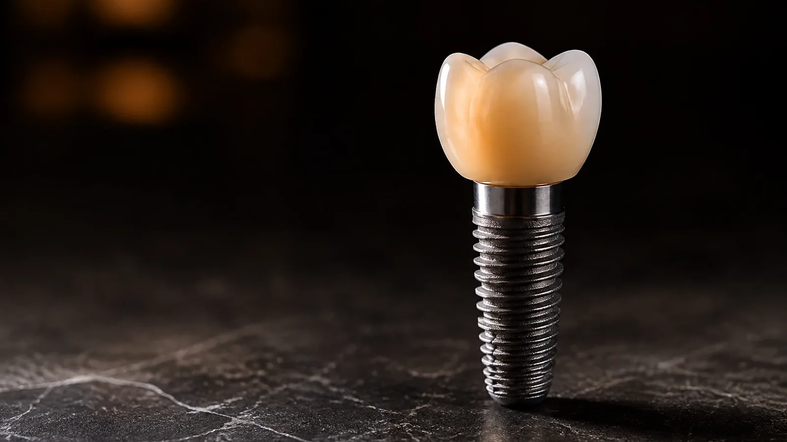
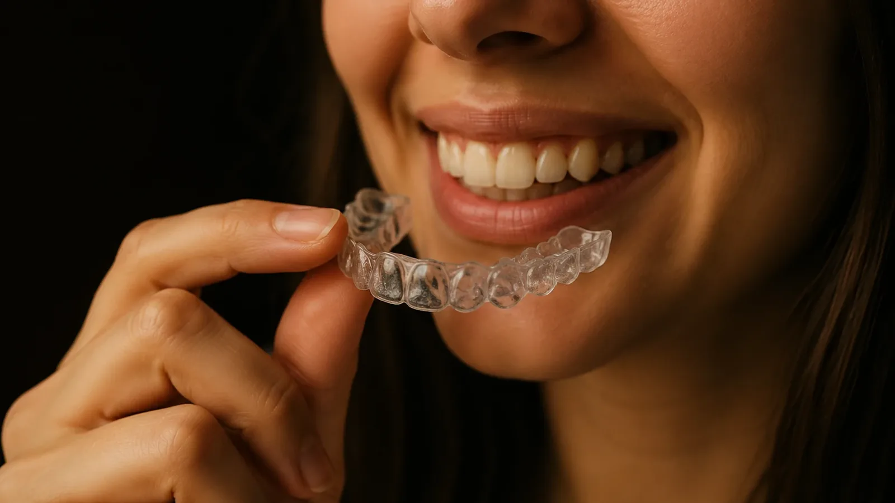
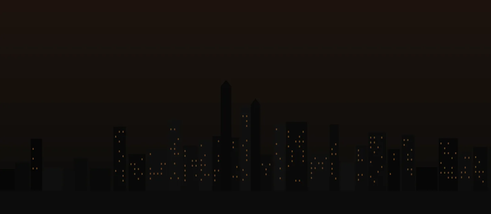

Encontrá un dentista en Asunción sin dar vueltas.
Te orientamos, entendemos tu caso y te conectamos con el profesional adecuado para vos.
Rápido, humano
y confidencial.
Orientación clara
y confidencial.
Encontrá un dentista en Asunción sin dar vueltas.
Te orientamos, entendemos tu caso y te conectamos con el profesional adecuado para vos.
Escribinos por WhatsApp¿Qué necesitás?
Contanos en segundos y te ayudamos a entender qué tipo de atención puede ser la indicada.
Listo. Hablemos por WhatsApp.
Tratamientos dentales que cubrimos
Desde urgencias hasta estética y rehabilitación. Te ayudamos a encontrar el tipo de atención que necesitás.
Ver todos los tratamientos


Simple.
Claro.
Humano.
Un proceso pensado para que tomes decisiones con información y acompañamiento real.
Por WhatsApp, en lenguaje simple y confidencial.
Te orientamos sobre qué tipo de atención puede ayudarte.
Con el profesional adecuado, según tu necesidad y ubicación.
No sabés qué tratamiento necesitás.
Está bien — para eso estamos.
No tenés que tener todo claro. Estamos para escucharte, orientarte y ayudarte a encontrar el camino correcto hacia tu salud bucal.
Escribinos por WhatsApp
Cobertura en Asunción y Gran Asunción
Te conectamos con profesionales en las principales ciudades.
Dentista.com.py no es una clínica ni forma parte de ninguna. Somos una plataforma de orientación y conexión para pacientes. No vendemos tratamientos ni cobramos comisiones a los profesionales. Nuestro único compromiso: tu ayuda y tu bienestar.
No. Dentista.com.py es una plataforma de orientación y conexión. No atendemos pacientes ni realizamos tratamientos: te escuchamos, te orientamos y te ponemos en contacto con un profesional independiente.
Trabajamos únicamente con profesionales odontológicos habilitados e independientes. Te contamos con quién vas a hablar antes de conectarte, y vos decidís si querés continuar.
El valor lo define cada profesional según el caso. Antes de coordinar, te ayudamos a entender qué preguntar para que no haya sorpresas.
Escribirnos y recibir orientación no tiene costo para vos.
Sí. Te presentamos opciones según tu necesidad y ubicación, y la decisión siempre es tuya.
Tu salud bucal empieza
con una conversación.
Escribinos por WhatsApp y contanos qué necesitás. Respuesta humana y rápida.